What Happens During Circumcision?

New A video clip showing part of the
circumcision
procedure (including audio) is now available.
(From the film "Nurses of St Vincent" by Barry
Ellsworth)
circ.mov (47 seconds, 2.7MB, QuickTime format)
circ.wav (sound only, 736KB, WAV format)
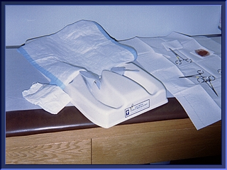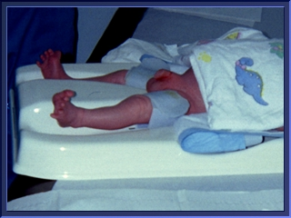
This is a Circumstraint. It has Velcro straps to restrain the baby's arms and legs so that he cannot move.
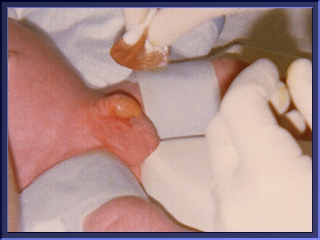 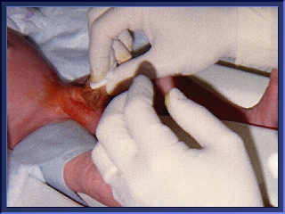
The area is prepared with Betadine, an antiseptic.
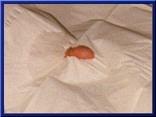
A surgical drape is placed over the baby. (In this
illustration,
the normal infant penis can be seen, with its foreskin
covering.)
Some doctors will use local anaesthesia, but this is by no means common. Anaesthetic injections will cause the penis to swell, causing pain and making the surgery more difficult. Both injections and topical anaesthetic creams can be dangerous. General anaesthesia is never used on young babies because of the risk of breathing problems.
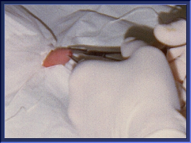
The foreskin opening in a newborn is normally very small,
to prevent the entry
of foreign matter (eg. fecal matter). The first stage
of circumcision is to grasp
the foreskin with forceps, and widen the opening.
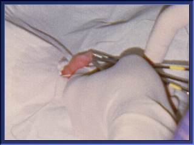
The foreskin is normally attached to the glans by a
membrane called the synechia.
The glans and inner lining of the foreskin are still
developing in the young child.
During circumcision, the synechia must be torn apart.
Naturally, this is painful.
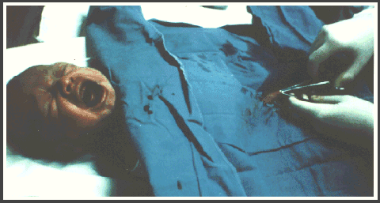
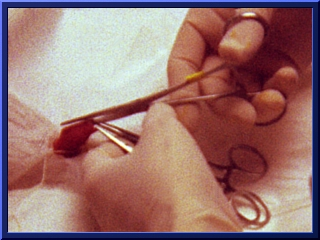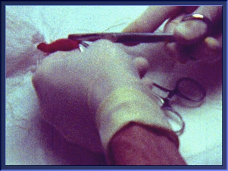
The foreskin is clamped. A slit is made in the dorsal side of the foreskin.
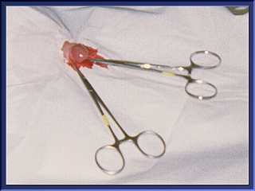
The slit is separated and the foreskin is laid back, exposing the raw and bleeding glans.
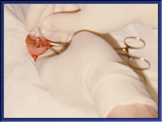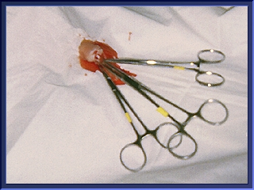
A PlastiBell of appropriate size is slipped over the glans, and the foreskin is laid over it.
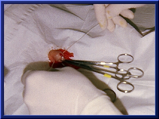
A ligature is tied in the ridge of the bell, as tightly as
possible around the foreskin.
Oozing will occur if the ligature is loose.
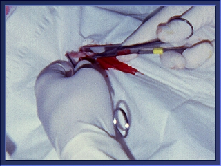
After one or two minutes to allow for crush, the foreskin is sliced off at the distal edge of the ligature using a knife or scissors. The surgeon trims as much tissue as possible to reduce the amount of necrotic tissue and the possibility of infection. The handle of the bell is snapped off at this time.
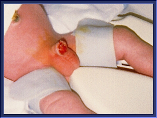
The rim of tissue will become necrotic (dead) and separate with the bell in 5 to 10 days. Occasionally, edema (swelling) will trap the plastic ring on the shaft of the penis. In this case it's usually necessary to cut off the ring, using a guide and ring cutter, although application of ice will sometimes reduce edema enough to remove the ring.
Circumcision removes (on average) one third of the penile skin system (sensitive inner and outer preputial layers), including the peripenic dartos muscle, the frenar band, and part of the frenulum. To understand more about these structures and what they are for, please visit Foreskin.ORG (maintained by John A. Erickson).
The Plastibell procedure, like the Gomco, takes 10-12 minutes or more to completion.
See also: In Memory of the Sexually Mutilated Child by John A. Erickson